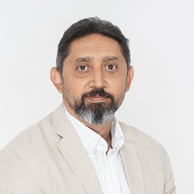

Dr. Haythem El-Messiry
Supervisor and Principal Investigator
Haythem El-Messiry is an Associate Professor of Computer Science at Canadian University Dubai, working across computer vision, deep learning for medical image analysis and volume electron microscopy. He completed his PhD in computer vision at the University of Ulm. He is principal investigator on the Dubai RDI grant "Towards high-resolution 3D reconstruction in volume electron microscopy".